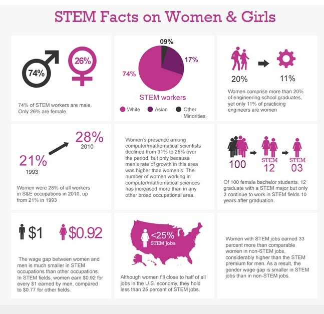
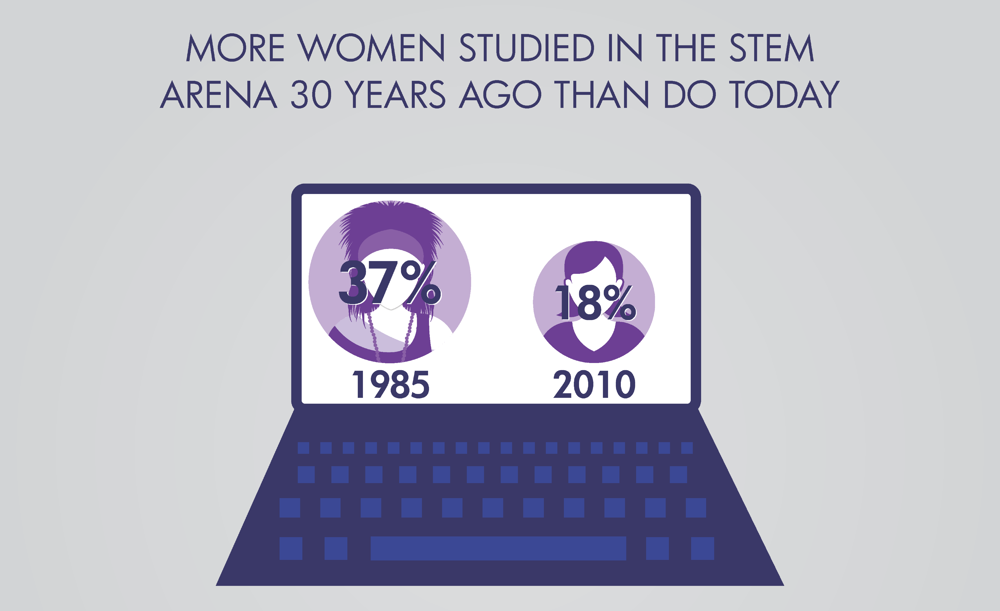
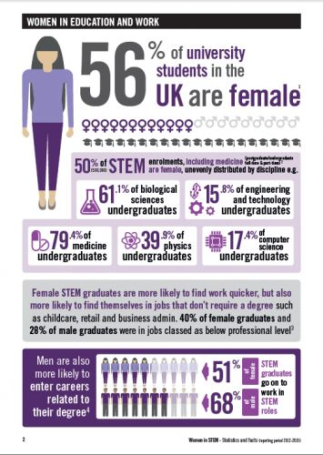
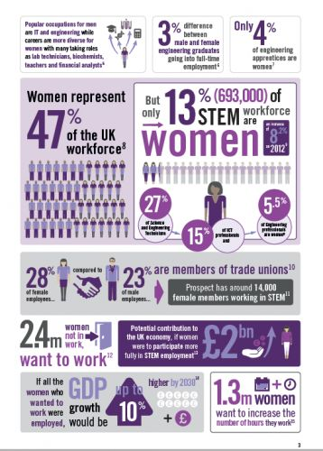

Women in STEM
GirlSRC stands to help high school girls with their college search to continue their education in a STEM field. We aim to ensure that students are comfortable in such a male-dominated field.
Fast Facts
- Of 100 women graduating college, 12 graduate with STEM degrees; 3 continue on to find careers in STEM.
- Women make up less than 25% of all STEM jobs.
- Up to 35% of women showed interest in STEM in childhood, while less than 18% actually pursue a degree in STEM.
- When women leavethe STEM field, 31% shift to non-STEM jobs, 20% leave the workforce entirely.
- Of the 25% women in STEM, 40% of those are in life sciences and only 17% are in Engineering.
- The percentage of women in computer science and software engineering fields is declining, despite several efforts to keep the number increasing.

ACT results then include a recommended choice of major based on their test results. 19% of women were recommended to go into education, only 1% was recommended for engineering and sciences, and 7% were recommended for math or computer science. Women make up about 20% of engineering students, however, only about 11% of engineers in the workforce are women.


So many Women show an interest in STEM at a young age and then never end up pursuing it. Of the women that do pursue a STEM degree in college, most of them end up in social sciences and medicine. A severely underwhelming number of women pursue computing and engineering degrees. The percentage of women in computing and engineering has actually declined, mostly due to the higher growth rate of men in those fields. Overall, the numbers of women in STEM fields has risen, but not nearly enough to bring true equality.